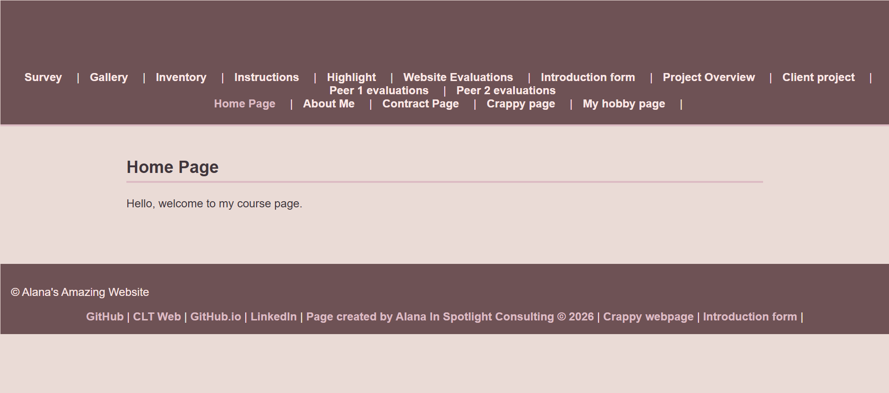

Peer Review 2: Green, Alana

Evaluation
- Submission: Correct Link
- File/Folder Names: Correctly named
Design:
The page has a clean and simple layout. The text is readable and the headings are clear. However, the GitHub version and the UNCC version of the site do not match in styling, which creates inconsistency. Also, the Home page does not appear to exist on the UNCC site, which can confuse users.
CRAP:
- Contrast: The colors are soft and easy to read, but adding more contrast could help important elements stand out more.
- Repetition: The site uses consistent colors and fonts, which helps maintain a uniform look.
- Alignment: The alignment is clean and centered, making the page easy to follow.
- Proximity: The spacing is good and nothing feels too crowded.
Page has within it:
- Header: Yes
- Main: Yes
- Footer: Yes
- Navigation is present and works: Yes
- Header has site/brand name: Yes
- Main starts with name of page as h2: Yes
- Page has brand tagline somewhere: Yes
Page has footer with:
- Links are present and working
Additional Issues:
- GitHub and UNCC pages do not match in styling
- Home page is missing on the UNCC site
Overall:
Overall, the website is clean, organized, and easy to navigate. Everything in the ITIS3135 version looks good and is structured properly. However, the UNCC version needs a bit of work to match it. The Home page doesn’t really have any content on it, and it also doesn’t link well to the other pages like the rest of the site does. If you fix the navigation and make sure all pages are connected and consistent across both versions, the site will feel complete and much more professional.